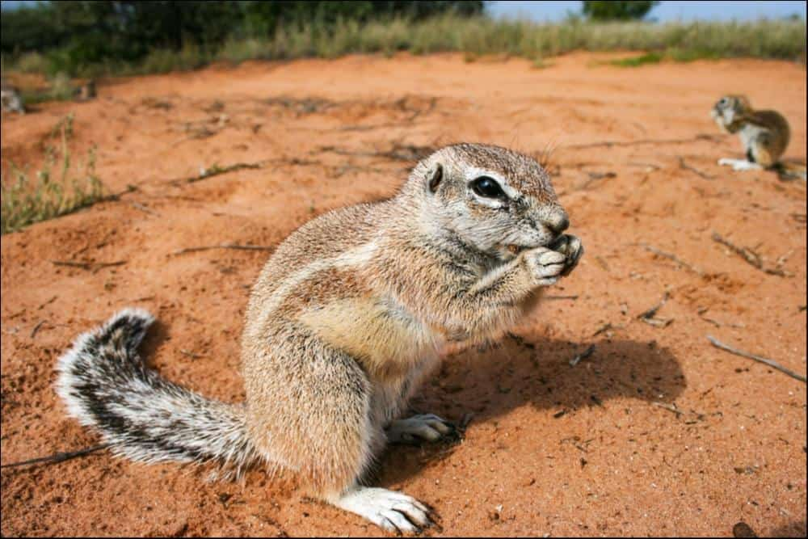
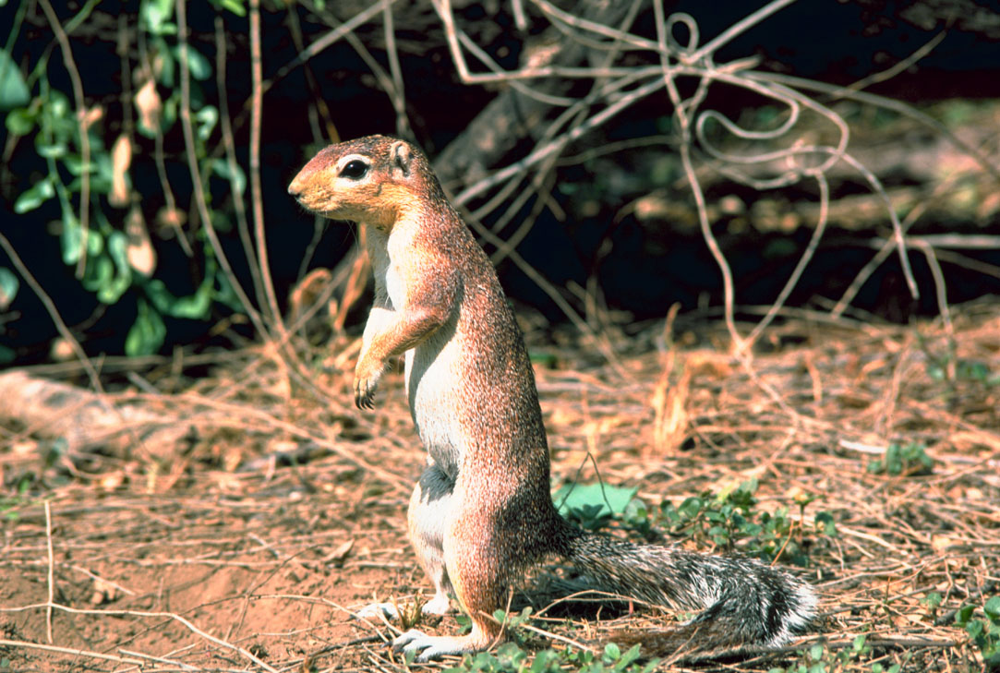
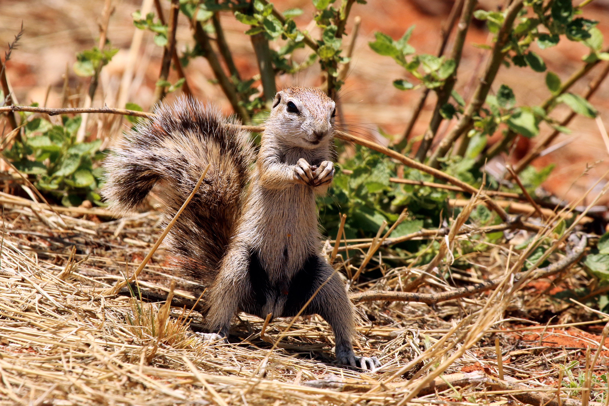
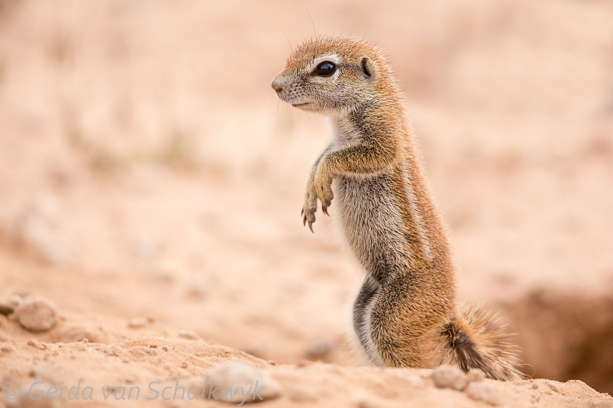

Xerus is a genus of African ground squirrels known for their diurnal activity and burrowing behavior. They live in open savannas and feed on seeds, nuts, and insects. Xerus species have bushy tails and live in social colonies.


